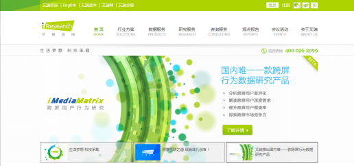
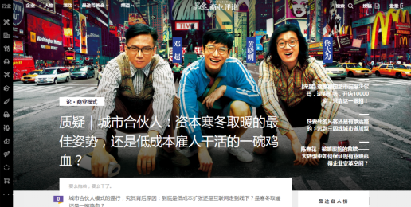
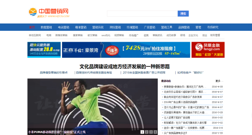
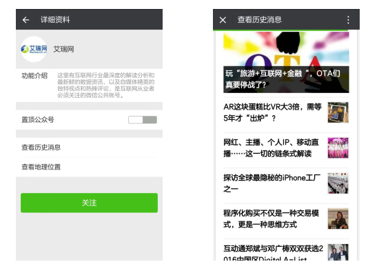
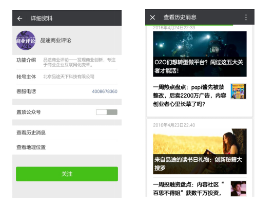

相关参考链接
一、艾瑞咨询 ( http://www.iresearch.com.cn/ )
艾瑞咨询成立于2002年，由杨伟庆发起创立，致力成为中国大数据时代下最佳互联网收视率及消费者洞察公司。艾瑞咨询以“生活梦想 科技承载”为理念，为客户提供中国市场最专业的互联网相关领域的数据产品、研究咨询等专业服务，助力客户提高对互联网产业的认知水平、盈利能力和综合竞争力，让互联网的力量点燃中国各个行业。
二、品途网 ( http://www.pintu360.com/ )
品途网成立于2012年10月，是一家O2O专业研究与服务机构。对于扎根于线下的商家，O2O是服务于他们的工具，更是一种经营理念。品途网的愿景是：为有志于O2O方向的创业者及期望使用O2O提升其经营效果的商家服务。品途网努力成为线上创业者的伙伴，同时也为线下商家做O2O的咨询对象。
三、中国营销网 ( http://www.hizcn.com/ )
中国营销网是由深圳市麦肯特企业顾问有限公司建立并运营，于2000年7月开通。是国内最早建立、最为知名的营销与管理综合网站。 网站以传播国内、国际经典营销理念、最新营销动态为己任，致力于打造服务于"5000万中国营销人"的网络平台。网站采用了当今最为先进的网络技术，整合了国内外一流的营销资源，开设了"营销文库、营销动态、营销社区、营销知识库、培训和咨询信息"等多项相对独立、相互依托、动态交流的频道，从而形成了一个国内领先的营销类权威网站。
四、“艾瑞网”微信公众号
这里有互联网行业最深度的解读分析和最新鲜的数据资讯，以及自媒体精英的独特观点和热辣评论，是互联网从业者必须关注的微信公众账号。
五、“品途商业评论”微信公众号
品途商业评论——发现商业创新，专注于商业企业互联网变革。
